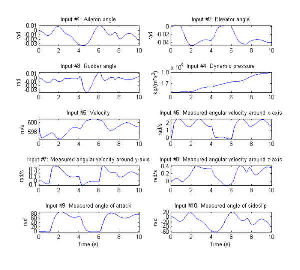
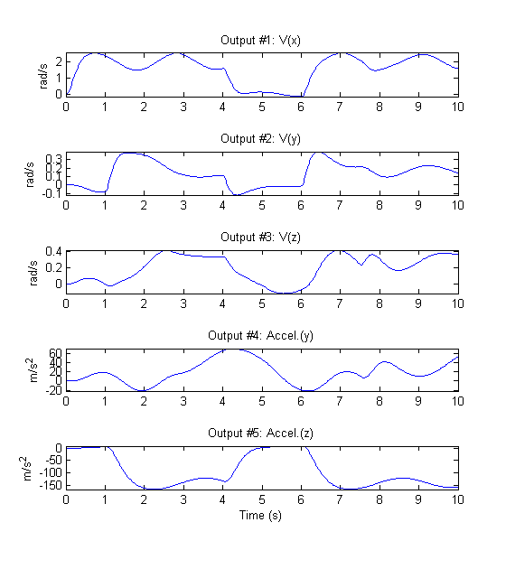
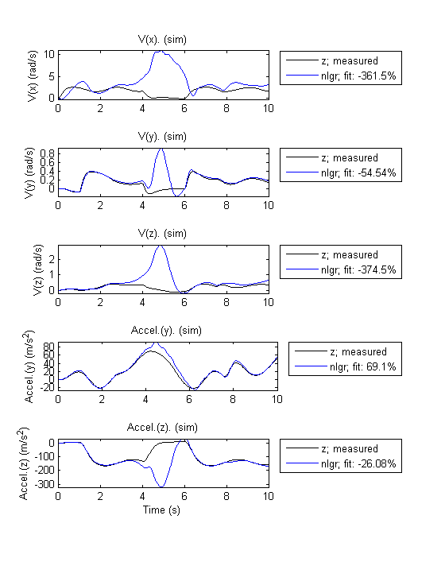
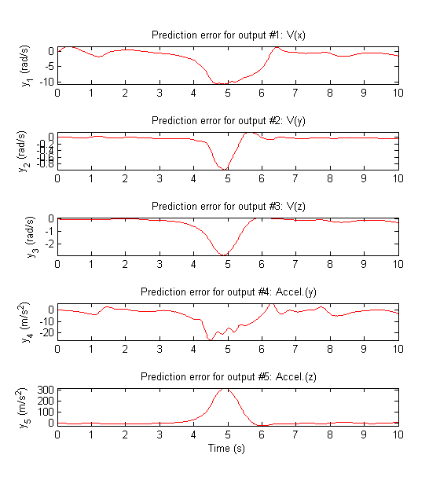
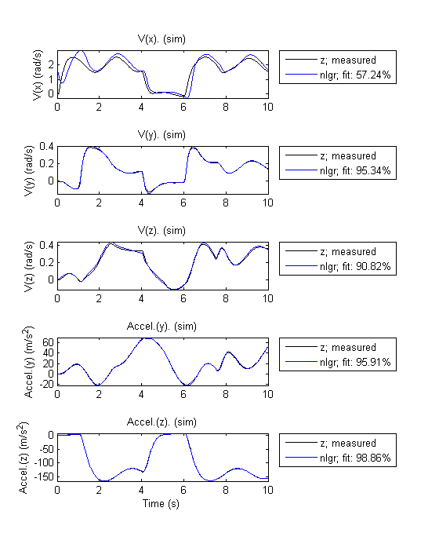
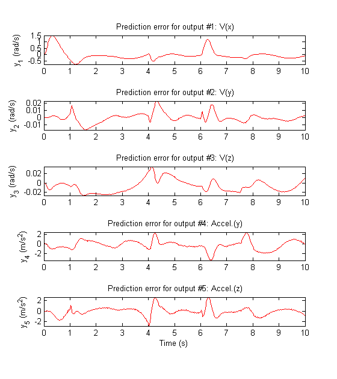

Modeling an Aerodynamic Body
In this case study, we investigate a large and complex nonlinear system. The purpose is to demonstrate the ability to use the IDNLGREY model to estimate a large number of parameters (16) in a system having many inputs (10) and outputs (5). The system is an aerodynamic body. We create a model that predicts the acceleration and velocity of the body using the measurements of its velocities (translational and angular) and various angles related to its control surfaces.
Contents
Input-Output Data
We load the measured velocities, angles and dynamic pressure from a data file named aerodata.mat:
load(fullfile(matlabroot, 'toolbox', 'ident', 'iddemos', 'data', 'aerodata'));
This file contains a uniformly sampled data set with 501 samples in the variables u and y. The sampling interval is 0.02 seconds. This data set was generated from another more elaborate model of the aerodynamic body.
Next, we create an IDDATA object to represent and store the data:
z = iddata(y, u, 0.02, 'Name', 'Aerodynamic body'); set(z, 'InputName', {'Aileron angle' 'Elevator angle' ... 'Rudder angle' 'Dynamic pressure' ... 'Velocity' ... 'Measured angular velocity around x-axis' ... 'Measured angular velocity around y-axis' ... 'Measured angular velocity around z-axis' ... 'Measured angle of attack' ... 'Measured angle of sideslip'}, ... 'InputUnit', {'rad' 'rad' 'rad' 'kg/(m*s^2)' 'm/s' ... 'rad/s' 'rad/s' 'rad/s' 'rad' 'rad'}); set(z, 'OutputName', {'V(x)' ... % Angular velocity around x-axis 'V(y)' ... % Angular velocity around y-axis 'V(z)' ... % Angular velocity around z-axis 'Accel.(y)' ... % Acceleration in y-direction 'Accel.(z)' ... % Acceleration in z-direction }, ... 'OutputUnit', {'rad/s' 'rad/s' 'rad/s' 'm/s^2' 'm/s^2'}); set(z, 'Tstart', 0, 'TimeUnit', 's');
View the input data:
figure('Name', [z.Name ': input data']); Pos = get(gcf,'Position'); set(gcf,'Position',[Pos(1), Pos(2)-Pos(4)/2, Pos(3)*1.25, Pos(4)*1.5]); for i = 1:z.Nu subplot(z.Nu/2, 2, i); plot(z(:, [], i)); title(['Input #' num2str(i) ': ' z.InputName{i}]); xlabel(''); axis('tight'); if (i > z.Nu-2) xlabel([z.Domain ' (' z.TimeUnit ')']); end end
Figure 1: Input signals.
View the output data:
figure('Name', [z.Name ': output data']); Pos = get(gcf,'Position'); set(gcf,'Position',[Pos(1), Pos(2)-Pos(4)/2, Pos(3), Pos(4)*1.5]); for i = 1:z.Ny subplot(z.Ny, 1, i); plot(z(:, i, [])); title(['Output #' num2str(i) ': ' z.OutputName{i}]); xlabel(''); axis('tight'); end xlabel([z.Domain ' (' z.TimeUnit ')']);
Figure 2: Output signals.
At a first glance, it might look strange to have measured variants of some of the outputs in the input vector. However, the model used for generating the data contains several integrators, which often result in an unstable simulation behavior. To avoid this, the measurements of some of the output signals are fed back via a nonlinear observer. Hence the notion of "measured" variables in the input set (see inputs 6-8 in the data object z). Thus, this is a system operating in closed loop and the goal of the modeling exercise is to predict "future" values of those outputs using measurements of current and past behavior.
Modeling the System
To model the dynamics of interest, we use an IDNLGREY model object to represent a state space structure of the system. A reasonable structure is obtained by using Newton's basic force and momentum laws (balance equations). To completely describe the model structure, basic aerodynamic relations (constitutive relations) are also used.
The C MEX-file, aero_c.c, describes the system using the state and output equations and initial conditions, as described next. Omitting the derivation details for the equations of motion, we only display the final state and output equations, and observe that the structure is quite complex as well as nonlinear.
/* State equations. */
void compute_dx(double *dx, double *x, double *u, double **p)
{
/* Retrieve model parameters. */
double *F, *M, *C, *d, *A, *I, *m, *K;
F = p[0]; /* Aerodynamic force coefficient. */
M = p[1]; /* Aerodynamic momentum coefficient. */
C = p[2]; /* Aerodynamic compensation factor. */
d = p[3]; /* Body diameter. */
A = p[4]; /* Body reference area. */
I = p[5]; /* Moment of inertia, x-y-z. */
m = p[6]; /* Mass. */
K = p[7]; /* Feedback gain. */ /* x[0]: Angular velocity around x-axis. */
/* x[1]: Angular velocity around y-axis. */
/* x[2]: Angular velocity around z-axis. */
/* x[3]: Angle of attack. */
/* x[4]: Angle of sideslip. */
dx[0] = 1/I[0]*(d[0]*A[0]*(M[0]*x[4]+0.5*M[1]*d[0]*x[0]/u[4]+M[2]*u[0])*u[3]-(I[2]-I[1])*x[1]*x[2])+K[0]*(u[5]-x[0]);
dx[1] = 1/I[1]*(d[0]*A[0]*(M[3]*x[3]+0.5*M[4]*d[0]*x[1]/u[4]+M[5]*u[1])*u[3]-(I[0]-I[2])*x[0]*x[2])+K[0]*(u[6]-x[1]);
dx[2] = 1/I[2]*(d[0]*A[0]*(M[6]*x[4]+M[7]*x[3]*x[4]+0.5*M[8]*d[0]*x[2]/u[4]+M[9]*u[0]+M[10]*u[2])*u[3]-(I[1]-I[0])*x[0]*x[1])+K[0]*(u[7]-x[2]);
dx[3] = (-A[0]*u[3]*(F[2]*x[3]+F[3]*u[1]))/(m[0]*u[4])-x[0]*x[4]+x[1]+K[0]*(u[8]/u[4]-x[3])+C[0]*pow(x[4],2);
dx[4] = (-A[0]*u[3]*(F[0]*x[4]+F[1]*u[2]))/(m[0]*u[4])-x[2]+x[0]*x[3]+K[0]*(u[9]/u[4]-x[4]);
} /* Output equations. */
void compute_y(double *y, double *x, double *u, double **p)
{
/* Retrieve model parameters. */
double *F, *A, *m;
F = p[0]; /* Aerodynamic force coefficient. */
A = p[4]; /* Body reference area. */
m = p[6]; /* Mass. */ /* y[0]: Angular velocity around x-axis. */
/* y[1]: Angular velocity around y-axis. */
/* y[2]: Angular velocity around z-axis. */
/* y[3]: Acceleration in y-direction. */
/* y[4]: Acceleration in z-direction. */
y[0] = x[0];
y[1] = x[1];
y[2] = x[2];
y[3] = -A[0]*u[3]*(F[0]*x[4]+F[1]*u[2])/m[0];
y[4] = -A[0]*u[3]*(F[2]*x[3]+F[3]*u[1])/m[0];
}We must also provide initial values of the 23 parameters. We specify some of the parameters (aerodynamic force coefficients, aerodynamic momentum coefficients, and moment of inertia factors) as vectors in 8 different parameter objects. The initial parameter values are obtained partly by physical reasoning and partly by quantitative guessing. The last 4 parameters (A, I, m and K) are more or less constants, so by fixing these parameters we get a model structure with 16 free parameters, distributed among parameter objects F, M, C and d.
Parameters = struct('Name', ... {'Aerodynamic force coefficient' ... % F, 4-by-1 vector. 'Aerodynamic momentum coefficient' ... % M, 11-by-1 vector. 'Aerodynamic compensation factor' ... % C, scalar. 'Body diameter' ... % d, scalar. 'Body reference area' ... % A, scalar. 'Moment of inertia, x-y-z' ... % I, 3-by-1 vector. 'Mass' ... % m, scalar. 'Feedback gain'}, ... % K, scalar. 'Unit', ... {'1/(rad*m^2), 1/(rad*m^2), 1/(rad*m^2), 1/(rad*m^2)' ... ['1/rad, 1/(s*rad), 1/rad, 1/rad, ' ... '1/(s*rad), 1/rad, 1/rad, 1/rad^2, ' ... '1/(s*rad), 1/rad, 1/rad'] ... '1/(s*rad)' 'm' 'm^2' ... 'kg*m^2, kg*m^2,kg*m^2' 'kg' '-'}, ... 'Value', ... {[20.0; -6.0; 35.0; 13.0] ... [-1.0; 15; 3.0; -16.0; -1800; -50; 23.0; -200; -2000; -17.0; -50.0] ... -5.0, 0.17, 0.0227 ... [0.5; 110; 110] 107 6}, ... 'Minimum',... {-Inf(4, 1) -Inf(11, 1) -Inf -Inf -Inf -Inf(3, 1) -Inf -Inf}, ... % Ignore constraints. 'Maximum', ... {Inf(4, 1) Inf(11, 1) Inf Inf Inf Inf(3, 1) Inf Inf}, ... % Ignore constraints. 'Fixed', ... {false(4, 1) false(11, 1) false true true true(3, 1) true true});
We also define the 5 states of the model structure in the same manner:
InitialStates = struct('Name', {'Angular velocity around x-axis' ... 'Angular velocity around y-axis' ... 'Angular velocity around z-axis' ... 'Angle of attack' 'Angle of sideslip'}, ... 'Unit', {'rad/s' 'rad/s' 'rad/s' 'rad' 'rad'}, ... 'Value', {0 0 0 0 0}, ... 'Minimum', {-Inf -Inf -Inf -Inf -Inf},... % Ignore constraints. 'Maximum', {Inf Inf Inf Inf Inf},... % Ignore constraints. 'Fixed', {true true true true true});
The model file along with order, parameter and initial states data are now used to create an IDNLGREY object describing the system:
FileName = 'aero_c'; % File describing the model structure. Order = [5 10 5]; % Model orders [ny nu nx]. Ts = 0; % Time-continuous system. nlgr = idnlgrey(FileName, Order, Parameters, InitialStates, Ts, ... 'Name', 'Aerodynamic body', 'TimeUnit', 's');
Next, we use data from the IDDATA object to specify the input and output signals of the system:
set(nlgr, 'InputName', z.InputName, 'InputUnit', z.InputUnit); set(nlgr, 'OutputName', z.OutputName, 'OutputUnit', z.OutputUnit);
Thus, we have an IDNLGREY object with 10 input signals, 5 states, and 5 output signals. As mentioned previously, the model also contains 23 parameters, 7 of which are fixed and 16 of which are free:
nlgr
Time-continuous nonlinear state-space model defined by 'aero_c' (MEX-file):
dx/dt = F(t, u(t), x(t), p1, ..., p8)
y(t) = H(t, u(t), x(t), p1, ..., p8) + e(t)
with 10 inputs, 5 states, 5 outputs, and 16 free parameters (out of 23).
Performance of the Initial Model
Before estimating the 16 free parameters, we simulate the system using the initial parameter vector. Simulation provides useful information about the quality of the initial model:
figure; compare(z, nlgr); % simulate the model and compare the response to measured values set(gcf,'Position',get(gcf,'Position')+[0 -287 0 287]) % enlarge figure to show axes clearly
Figure 3: Comparison between measured outputs and the simulated outputs of the initial model.
From the plot, we see that the measured and simulated signals match each other closely except for the time span 4 to 6 seconds. This fact is clearly revealed in a plot of the prediction errors:
figure; Pos = get(gcf,'Position'); set(gcf,'Position',[Pos(1), Pos(2)-Pos(4)/2, Pos(3), Pos(4)*1.5]); pe(z, nlgr);
Figure 4: Prediction errors of the initial model.
Parameter Estimation
The initial model as defined above is a plausible starting point for parameter estimation. Next, we compute the prediction error estimate of the 16 free parameters. This computation will take some time.
duration = clock; nlgr = pem(z, nlgr, 'Display', 'on'); % estimate parameters using "pem" duration = etime(clock, duration);
Criterion: Trace minimization
Scheme: Trust-Region Reflective Newton (LSQNONLIN, LargeScale = 'On')
--------------------------------------------------------------
Norm of First-order
Iteration Cost step optimality
--------------------------------------------------------------
0 1389.23 - -
1 576.647 10 4.41e+005
2 409.863 10 3.82e+004
3 369.655 10 9.3e+003
4 345.151 20 1.38e+004
5 323.765 40 1.08e+004
6 294.091 80 1.48e+004
7 241.874 160 1.98e+004
8 100.93 320 2.25e+005
9 34.6073 640 9.26e+005
10 7.3802 1.28e+003 1.14e+005
11 7.3802 1.52e+003 1.14e+005
12 4.04828 381 6.95e+004
13 1.26636 761 5.16e+004
14 0.375938 301 6.27e+003
15 0.356682 431 3.59e+003
16 0.352838 105 441
17 0.352269 71.5 256
18 0.352251 37.4 166
19 0.352214 9.34 45
20 0.352212 4.88 24.5
--------------------------------------------------------------
Performance of the Estimated Aerodynamic Body Model
On the computer used, estimation of the parameters took the following amount of time to complete:
disp(['Estimation time : ' num2str(duration, 4) ' seconds']); disp(['Time per iteration: ' num2str(duration/nlgr.EstimationInfo.Iterations, 4) ' seconds.']);
Estimation time : 10.67 seconds Time per iteration: 0.5336 seconds.
To evaluate the quality of the estimated model and to illustrate the improvement compared to the initial model, we simulate the estimated model and compare the measured and simulated outputs:
figure; compare(z, nlgr); set(gcf,'Position',get(gcf,'Position')+[0 -287 0 287])
Figure 5: Comparison between measured outputs and the simulated outputs of the estimated model.
The figure clearly indicates the improvement compared to the simulation result obtained with the initial model. The system dynamics in the time span 4 to 6 seconds is now captured with much higher accuracy than before. This is best displayed by looking at the prediction errors:
figure; Pos = get(gcf,'Position'); set(gcf,'Position',[Pos(1), Pos(2)-Pos(4)/2, Pos(3), Pos(4)*1.5]); pe(z, nlgr);
Figure 6: Prediction errors of the estimated model.
Let us conclude the case study by displaying the model and the estimated uncertainty:
present(nlgr);
Time-continuous nonlinear state-space model defined by 'aero_c' (MEX-file):
dx/dt = F(t, u(t), x(t), p1, ..., p8)
y(t) = H(t, u(t), x(t), p1, ..., p8) + e(t)
with 10 inputs, 5 states, 5 outputs, and 16 free parameters (out of 23).
Inputs:
u(1) Aileron angle(t) [rad]
u(2) Elevator angle(t) [rad]
u(3) Rudder angle(t) [rad]
u(4) Dynamic pressure(t) [kg/(m*s^2)]
u(5) Velocity(t) [m/s]
u(6) Measured angular velocity around x-axis(t) [rad/s]
u(7) Measured angular velocity around y-axis(t) [rad/s]
u(8) Measured angular velocity around z-axis(t) [rad/s]
u(9) Measured angle of attack(t) [rad]
u(10) Measured angle of sideslip(t) [rad]
States: initial value
x(1) Angular velocity around x-axis(t) [rad/s] xinit@exp1 0 (fix) in [-Inf, Inf]
x(2) Angular velocity around y-axis(t) [rad/s] xinit@exp1 0 (fix) in [-Inf, Inf]
x(3) Angular velocity around z-axis(t) [rad/s] xinit@exp1 0 (fix) in [-Inf, Inf]
x(4) Angle of attack(t) [rad] xinit@exp1 0 (fix) in [-Inf, Inf]
x(5) Angle of sideslip(t) [rad] xinit@exp1 0 (fix) in [-Inf, Inf]
Outputs:
y(1) V(x)(t) [rad/s]
y(2) V(y)(t) [rad/s]
y(3) V(z)(t) [rad/s]
y(4) Accel.(y)(t) [m/s^2]
y(5) Accel.(z)(t) [m/s^2]
Parameters: value standard dev
p1(1) Aerodynamic force coefficient [1/(rad*m^2..] 21.3246 0.348672 (est) in [-Inf, Inf]
p1(2) -7.78593 0.186189 (est) in [-Inf, Inf]
p1(3) 36.2971 0.752835 (est) in [-Inf, Inf]
p1(4) 13.0201 1.41627 (est) in [-Inf, Inf]
p2(1) Aerodynamic momentum coefficient [1/rad, 1/(..] -1.03446 0.0750181 (est) in [-Inf, Inf]
p2(2) 15.337 0.882165 (est) in [-Inf, Inf]
p2(3) 2.96768 0.202111 (est) in [-Inf, Inf]
p2(4) -18.7409 0.356223 (est) in [-Inf, Inf]
p2(5) -1160.03 234.007 (est) in [-Inf, Inf]
p2(6) -57.0413 1.36136 (est) in [-Inf, Inf]
p2(7) 34.2341 1.45059 (est) in [-Inf, Inf]
p2(8) -208.39 8.23738 (est) in [-Inf, Inf]
p2(9) -2480.44 278.64 (est) in [-Inf, Inf]
p2(10) -32.5455 3.165 (est) in [-Inf, Inf]
p2(11) -50.9551 1.6996 (est) in [-Inf, Inf]
p3 Aerodynamic compensation factor [1/(s*rad)] -0.651994 0.715564 (est) in [-Inf, Inf]
p4 Body diameter [m] 0.17 0 (fix) in [-Inf, Inf]
p5 Body reference area [m^2] 0.0227 0 (fix) in [-Inf, Inf]
p6(1) Moment of inertia, x-y-z [kg*m^2, kg..] 0.5 0 (fix) in [-Inf, Inf]
p6(2) 110 0 (fix) in [-Inf, Inf]
p6(3) 110 0 (fix) in [-Inf, Inf]
p7 Mass [kg] 107 0 (fix) in [-Inf, Inf]
p8 Feedback gain [-] 6 0 (fix) in [-Inf, Inf]
The model was estimated from the data set 'Aerodynamic body', which
contains 501 data samples.
Loss function 3.45246e-010 and Akaike's FPE 3.67297e-010
Created: 29-Jun-2010 23:25:59
Last modified: 29-Jun-2010 23:26:17
Concluding Remarks
The estimated model is a good starting point for investigating the fundamental performance of different control strategies. High-fidelity models that preferably have a physical interpretation are, for example, vital components of so-called "model predictive control systems".
Additional Information
For more information on identifying dynamic systems with System Identification Toolbox™, see the System Identification Toolbox product page.